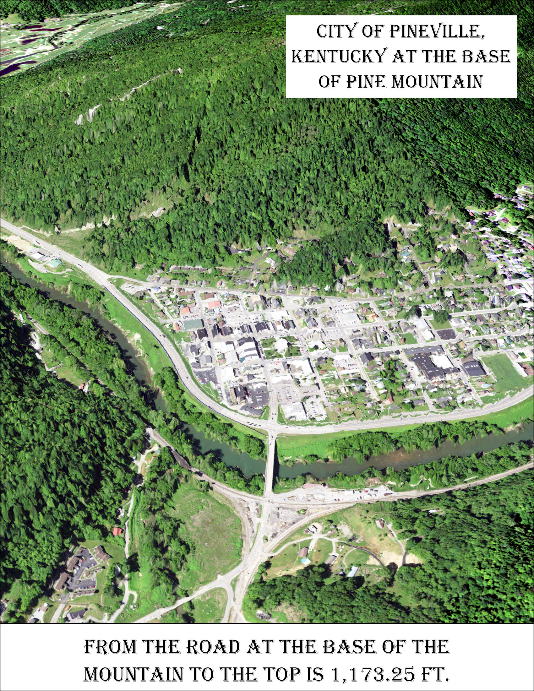

Gem City
The City Below The Rock
Caption for Mapbox map Enlarge map
The Goal of this page is to highlight some of the important stories and history about the small town.
The City of Pineville in Bell County sits between the Cumberland River and Pine Mountain. Pineville once known as Cumberland Ford for being the place to cross the Cumberland river has a lot of history for such a small town.
On April 4th, 1977 the City of Pineville went underwater. The water exceeded the floodwall that had been build in 1952 and flooded the city. This destroyed and damaged over 200 houses. Because of this the floodgates have been upgraded since the upgrade they have only been closed once on Febuary 6, 2020. Only one side was closed to monitor the river and not have to completely shut down the road.
Link to Flood of 1977 youtube video created by: NoRegretsProd Play Video
 Credit: National Weather Service
Credit: wymt.com
Credit: National Weather Service
Credit: wymt.com
One story that goes back as far as the 1930's is the tell of Chain Rock. The people told the story of the dangerous rock that would fall and crush the city if had a chain not been put up to hold the rock in place.
Credit: Allie Robinson This map shows the height of the mountain from the base to the top. The link shows a drown view of the mountain as well as the city.
Link to Pineville at the base of Pine Mountain animation Play Video
An important historical event for Pineville is the Kentucky Mountain Laurel Festival. The KMLF started in 1931 and will celebrate its 92th year in May,2022. it is the lonegest running festival in Kentucky.
 Credit: Jay Compton
Credit: Jay Compton
 Credit: KMLF Facebook
Credit: KMLF Facebook
To create these maps I used ArcGIS, MapBox, and J____ Notbook.